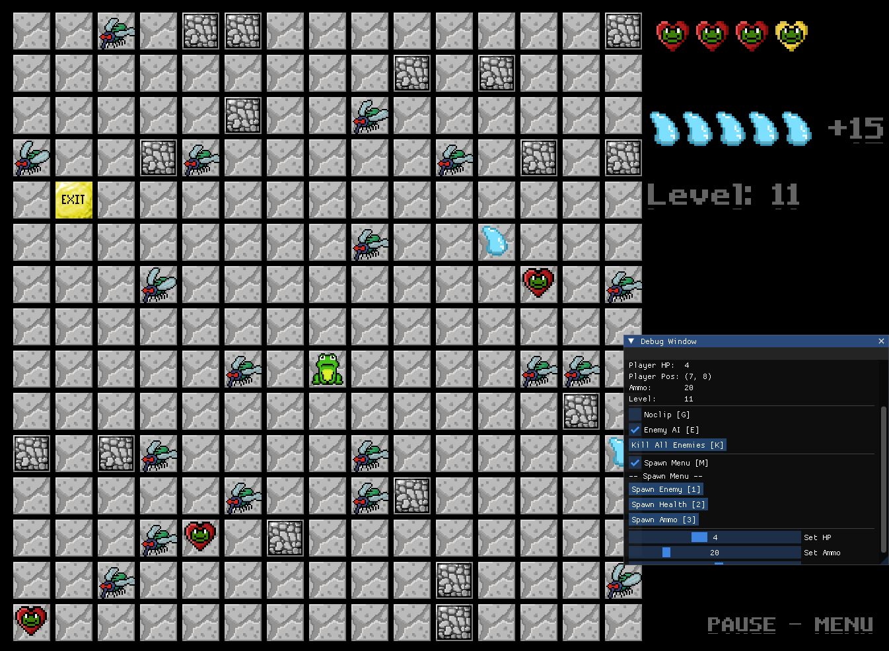
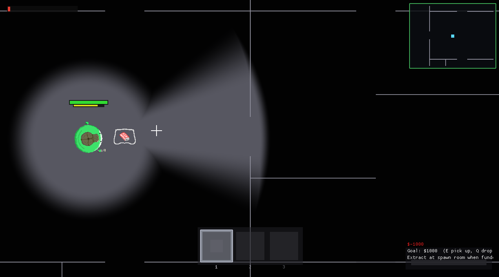

F.R.O.G
Project Overview
F.R.O.G is a top-down maze exploration game developed in C++
using SDL and FMOD. The player must navigate through dangerous
environments, manage stamina, avoid enemies, and collect items.
The game will follow generic survival game logic, meaning if the player suffers too much damage the game will
finish and prompt the player that they have failed to complete the objective.
The main goal of the game is to locate the exit tile of each level to progress further into the game, after a certain
number of levels (e.g. level 20) the final exit tile will spawn allowing the player to complete the game.
Player and enemy will be given opportunities to attack one another but have limitations depending on the entity
type.
Gameplay Screenshot

Technical Features
- Tile-based map rendering
- Tile collision detection
- Player movement system
- Ammo and health management
- Enemy AI behaviours using BFS algorithm
- FMOD audio integration
- Animation system
- Scene integration
Challenges & Solutions
Animation Issues
Animation sprites played all frames in the given spritesheet.
Solution was to modify the engine framework and develop a method to select specific frames from within the spritesheet.
Memory & Cache
In early versions, initalising sprites cause graphical sprite errors due to the program not handling sprite generation beforehand.
Solution was to develop a function to preload shaders, sprites and audio to avoid these errors. Ensuring the program correctly saves memory addresses.
Reflection
This project improved my understanding of game loops, state management, collision systems, and audio integration.
Future improvements would include better pathfinding and additional enemy behaviours.
Phantom Raiders
Project Overview
Phantom Raiders is a horror experience for the player using factors such as: lack of visibility and overwhelming mechanics (sanity, limited flashlight charge, stamina).
You play as the Employee and is contracted to work a graveyard shift with clear requirements of extracting items back to
the company using the extraction points. The employee must complete areas of item extractions
behind the night ends. The employee must be wary of what lurks in the dark as otherworldly beings
inhabit the facility. The company equips the employee with a flashlight to help navigate the facility and
find items.
Gameplay Screenshot

Technical Features
- Free roam movement system
- Collision detection system
- Various UI elements
- Sanity, Flashlight, Stamina, Inventory and Health management
- Complex Enemy AI algorithms
- > BFS path finding using Nodes
- FMOD audio integration
- Scene integration
Challenges & Solutions
Cross-compatiblity Issues
Working with group members using different operating systems that presented compatiblity complications.
Developed extensive debugging and bug detecting skills to resolve complications
Map Generation
Creating unique map layouts.
Developed a complex algorithm to generate matrices to format map data.
Reflection
This project developed skills in teamwork based projects to better understand team dynamics and culture.
Future improvements would to improve on the current build to incorporate features that did not make the Gold Milestone.